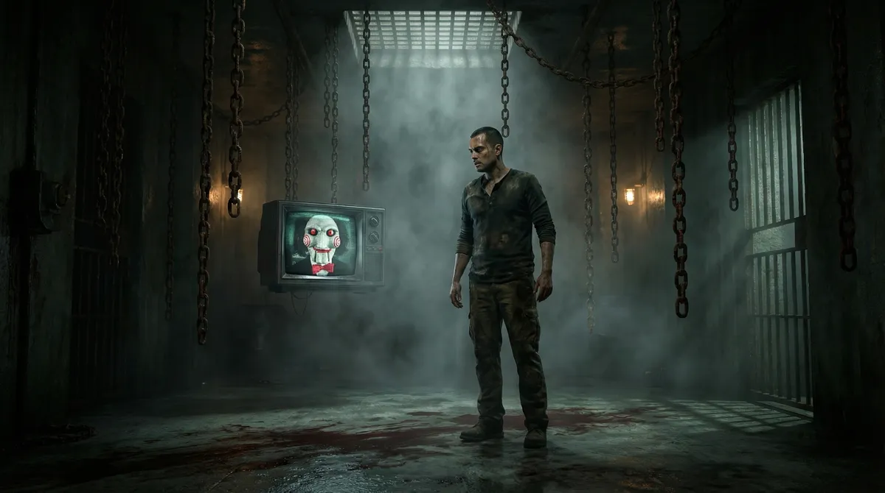
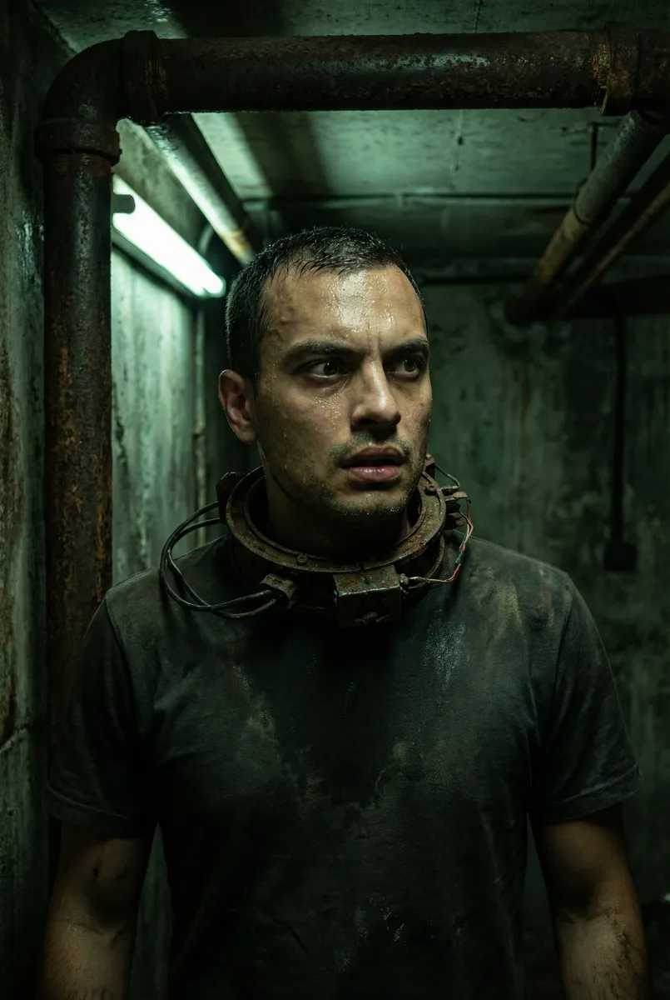
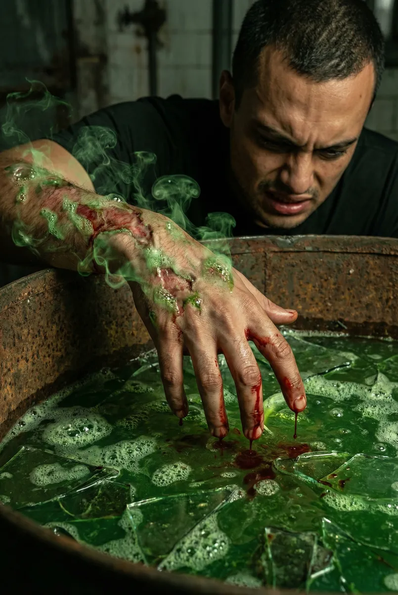
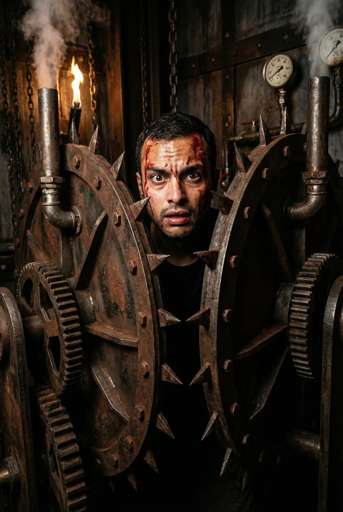
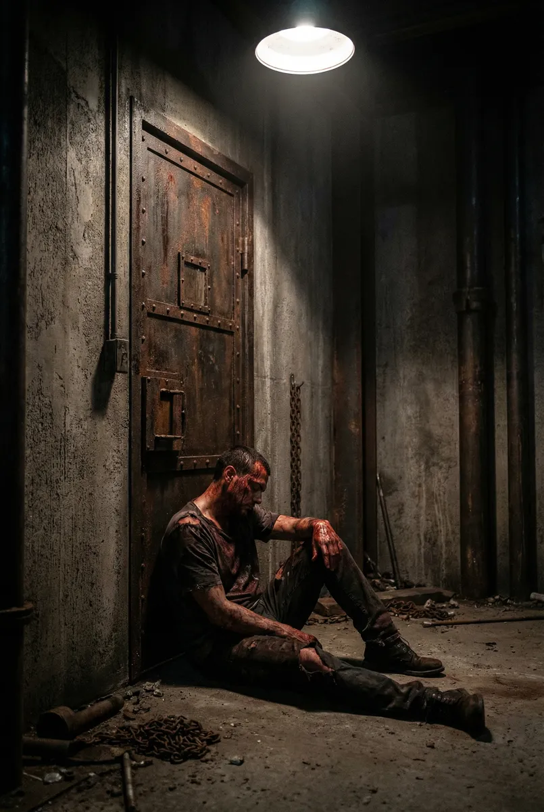

Ricardo: O Labirinto de Carne e Aço

Protagonizado por Ricardo
Capítulo 1
Ricardo acorda em um necrotério abandonado, o cheiro de ferrugem e morte impregna o ar. Preso por um colar de aço conectado a engrenagens hidráulicas, ele ouve a voz rouca através de um gravador: 'Olá, Ricardo. Você não valorizou sua vida. Hoje, o sangue será seu preço.' O cronômetro começa a contagem regressiva fatal.
Prompt: Ultra-realistic shot of Ricardo waking up in a dark grimy basement, a heavy mechanical collar around his neck, rusted pipes and dim green light, realistic textures, cinematic horror photography.

Capítulo 2
O primeiro desafio exige que Ricardo enfie a mão em um tanque de vidro repleto de ácido e cacos de vidro para recuperar uma chave. Ao mergulhar o braço, ele sente a carne borbulhar e derreter, o sangue escorrendo quente enquanto o mecanismo do colar começa a girar, apertando sua garganta de forma agonizante.
Prompt: Detailed close-up of a hand reaching into a container filled with green acid and sharp glass, skin dissolving and blood dripping, hyper-realistic gore details, intense cinematic lighting.

Capítulo 3
Com a mão em carne viva e ossos expostos, ele escapa para a próxima sala. Diante dele, uma armadilha 'Esmaga-Tórax'. Ricardo deve escolher entre quebrar seus próprios dedos em um dispositivo de pressão ou ser esmagado por placas de metal dentadas. O som de ossos estalando e o jorro de fluido vital ecoam no silêncio sepulcral.
Prompt: A massive mechanical trap with spiked metal plates closing in on Ricardo, he looks terrified with sweat and blood on his face, industrial steampunk horror aesthetic, high contrast photography.

Capítulo 4
O desafio final exige um sacrifício visceral. Ricardo deve remover um chip subcutâneo cravado atrás de seu próprio globo ocular usando apenas um bisturi enferrujado. A dor é indescritível; a visão falha enquanto o sangue e o fluido ocular mancham o chão frio da fábrica em um espetáculo de horror puro.
Prompt: Extreme close-up of an eye reflecting a rusty blade, blood running down the cheek from a fresh wound, intense psychological horror, cinematic grain, realistic skin texture and moisture.

Capítulo 5
Ofegante e mutilado, Ricardo alcança a pesada porta de aço. Ao girar a maçaneta, ele percebe que o caminho leva de volta ao início. A voz de Jigsaw sussurra: 'Muitos morrem, mas poucos renascem'. O portão se fecha violentamente, trancando-o na escuridão eterna enquanto o título 'Game Over' aparece na tela.
Prompt: Ricardo slumped against a heavy iron door, covered in blood and grime, looking defeated and broken, a single spotlight on him, dark shadows, cinematic wide ending shot, 16:9.
